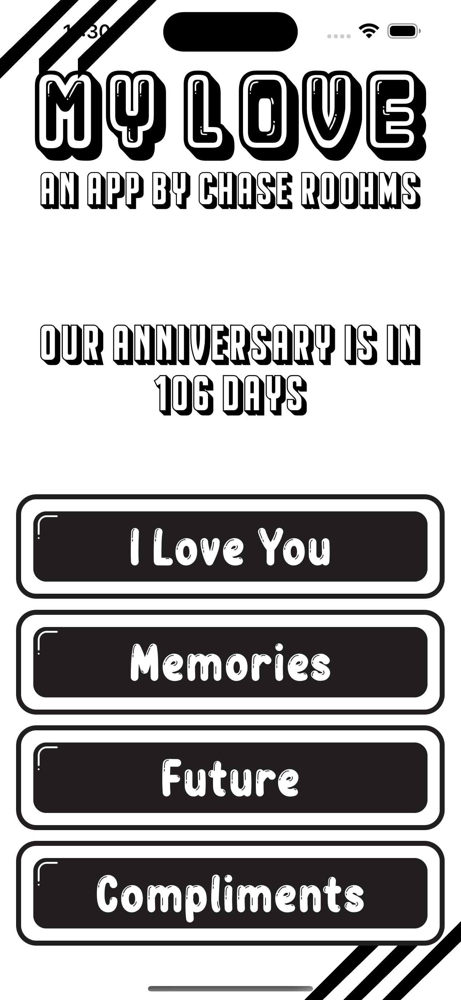
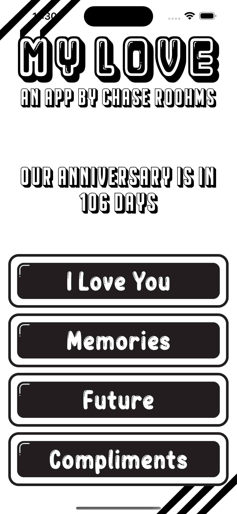

Hi I'm Chase Roohms!
A soon-to-be graduating Computer Science Major at Texas State with a focus on software engineering. My journey in the world of technology has equipped him with a versatile skill set, preparing me to be a well-rounded professional in the field.
With a strong foundation in C++ and Java, I have honed my programming skills and am always excited to tackle new challenges. One of my standout skills is working with JSoup, an open source Java library, enabling me to seamlessly manipulate and parse through web-pages for information. This proficiency in data handling adds a valuable layer to my software development toolkit. I also have experience using Apache POI to analyze excel spreadsheets, as well as experience working with various web based API’s.
My skills extend beyond just coding – I have a knack for crafting intuitive and visually appealing user interfaces. This skill stems from having created both Java Swing, and iOS Swift based UIs that enhance the user experience. I am even experienced using Adobe Photoshop and Illustrator to make custom buttons, icons, and more! Alongside these skills, I am also a self taught web-developer - crafting HTML and CSS websites from scratch, combining functionality with an aesthetically pleasing design.
My passion for computers and software is the driving force behind my commitment to excellence in every project. I am always eager to explore new horizons and take on complex problems. As I prepare to graduate, I look forward to using my skills and experience to influence the ever-changing world of technology.
Connect with me today, and we can collaborate to turn innovative ideas into reality.